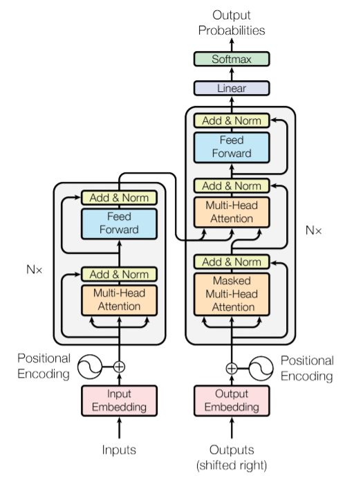
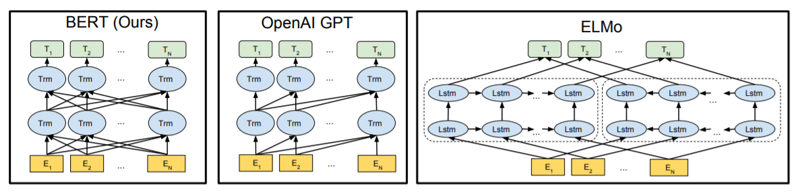
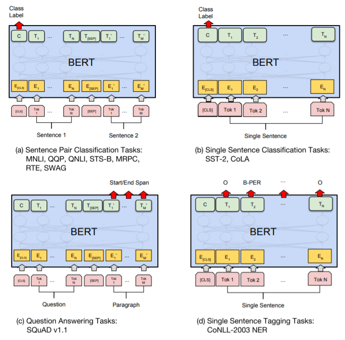

BERT
Introduction
- BERT stands for Bidirectional Encoder Representations from Transformers. (devlin2019bert)
- Basically, it is a modification of Transformers (vaswani2017attention), where we just keep the encoder part and discard the decoder part.

- At the time of release, it obtained state-of-the-art results on eleven natural language processing tasks. To quote the paper, "[paper pushed] the GLUE score to 80.5% (7.7% point absolute improvement), MultiNLI accuracy to 86.7% (4.6% absolute improvement), SQuAD v1.1 question answering Test F1 to 93.2 (1.5 point absolute improvement) and SQuAD v2.0 Test F1 to 83.1 (5.1 point absolute improvement)."
- The major motivation behind BERT is to handle the limitation of the existing language models which are unidirectional in nature. This means that they only consider text left to right for sentence level inference. BERT on the other hand, allows tokens to attend to both sides in self-attention layer. This is one of the major reason for it high performance.

- The most fascinating feature of BERT is that it is super easy to use it for a large number of NLP tasks. The idea is to take the pretrained BERT model and later fine tune it for the specific task. The pre-trained model is trained on a large corpus in a unsupervised manner, hence the model learns the generic representations of the tokens from large corpus of text. This makes it easy to later fine tune it for any other NLP task, as the model comes pretrained with large context about the language, grammar and semantic representations.

- Training BERT is an interesting paradigm in itself. The original paper proposed two unsupervised methods for training,
- Masked LM (MLM): Where some percentage (15%) of the input tokens are masked at random, and then the model tries to predict those masked tokens. They created a special token
[MASK]for this purpose. - Next Sentence Prediction (NSP): Where two sentences A and B are chosen such that, 50% of the time B is the actual next sentence that follows A (labelled as
IsNext), and 50% of the time it is a random sentence from the corpus (labelled asNotNext). The model is trained to predict if the second sentences follow the first or not.
- Masked LM (MLM): Where some percentage (15%) of the input tokens are masked at random, and then the model tries to predict those masked tokens. They created a special token
Analysis
BERT output and finetuning (unsupervised)
- An analysis on the selection of suitable BERT output and the advantage of fine-tuning (unsupervised learning on unlabeled data on tasks like MLM) the model was done. The report provides following performance table comparing different experiments. Complete article here.
| Exp no | Model name | F1 macro score | Accuracy |
|---|---|---|---|
| 1 | Pooler output | 64.6% | 68.4% |
| 2 | Last hidden state | 86.7% | 87.5% |
| 3 | Fine-tuned and Pooler output | 87.5% | 88.1% |
| 4 | Fine-tuned and last hidden state | 79.8% | 81.3% |
- It also answers following questions,
- Should I only use CLS token or all token's output for sentence representation? Well, it depends. From the experiments, it seems if you are fine-tuning the model, using the pooler output will be better. But if there is no fine-tuning, the last hidden state output is much better. Personally, I will prefer the last hidden state output, as it provides comparative result without any additional compute expensive fine-tuning.
- Will fine-tuning the model beforehand increase the accuracy? A definite yes! Exp 3 and 4 reports higher score than Exp 1 and 2. So if you have the time and resource (which ironically is not usually the case), go for fine-tuning!
Is BERT a Text Generation model?
- Short answer is no. BERT is not a text generation model or a language model because the probability of the predicting a token in masked input is dependent on the context of the token. This context is bidirectional, hence the model is not able to predict the next token in the sequence accurately with only one directional context (as expected for language model).
- Several analysis were done on the text generation prowess of BERT model. One such analysis is presented in this paper. Here the authors presents BERT as markov random field language model. Then after some errors were pointed out wrt paper, the authors corrected the claim and suggested BERT is a non-equilibrium language model (here)
Tip
Do you know that during mask prediction, BERT model predicts some tokens for [PAD] tokens as well. This is true for sentences that are smaller than the max length of the model and hence require padding. In a sense, this is kind of text generation, where you just provide the sentence and the model predicts the next token till the max length. But as expected the prediction is not that accurate.
BERT for sentence representation?
- One question usually asked is that - "Can we use BERT to generate meaningful sentence representations?" The answer is "No". Don't get me wrong, while it is possible to use BERT to generate sentence representations, but the key word here is "meaningful". One of the way to do this is to pass one sentence to the model and get the representation for fixed
[CLS]token as sentence representation. But as shown in [2], this common practice yields bad sentence embedding, often even worse than Glove embeddings (which was introduced in 2014)! - The major problem here is the pre-training strategy used to train BERT. While it is good for downstream tasks like classification, it's not that good for generating generic representations. This is because for correct sentence representation, we want the embeddings of similar sentences closer to each other and dissimilar sentences to be further apart. And this is not what happens during BERT pretraining. To cater to this issue, we will have to further finetune the model. And in fact, this is where BERT shines again, as with minimal training (sometimes even for 20 mins with <1000 samples) we can expect good results.
- One of the ways to finetune for sentence represenration is to use triplet loss. For this, we prepare a dataset with a combination of
(anchor, positive, negative)sentences. Here anchor is the base sentence, positive is the sentence that is similar to the anchor sentence, and negative is the sentence that is dissimilar to the anchor sentence. The model is trained to "bring" the representation of(anchor, positive)closer and(anchor, negative)apart. The loss is defined below, where \(s_*\) is the respective sentence representation and \(\epsilon\) is the margin.
Code
Pretrained BERT for Sentiment Classification
- The code contains the
DatasetandDataloaderas well, which can be referred for any fine tuning task. - Download dataset from IMDB 50k review
1 2 3 4 5 6 7 8 9 10 11 12 13 14 15 16 17 18 19 20 21 22 23 24 25 26 27 28 29 30 31 32 33 34 35 36 37 38 39 40 41 42 43 44 45 46 47 48 49 50 51 52 53 54 55 56 57 58 59 60 61 62 63 64 65 66 67 68 69 70 71 72 73 74 75 76 77 78 79 80 81 82 83 84 85 86 87 88 89 90 91 92 93 94 95 96 97 98 99 100 101 102 103 104 105 106 107 108 109 110 111 112 113 114 115 116 117 118 119 120 121 122 123 124 125 126 | |
Fine tuning the BERT model
- Fine tuning could include training BERT on one or many of the proposed unsupervised tasks.
- Here, we will train the BERT on MLM (Masked language modeling) task.
- This includes masking some tokens of input and BERT predicting the token based on the context tokens.
- Referenced from this video of James Briggs.
1 2 3 4 5 6 7 8 9 10 11 12 13 14 15 16 17 18 19 20 21 22 23 24 25 26 27 28 29 30 31 32 33 34 35 36 37 38 39 40 41 42 43 44 45 46 47 48 49 50 51 52 53 54 55 56 57 58 59 60 61 62 63 64 65 66 67 68 69 70 71 72 73 74 75 76 77 78 79 80 81 82 83 84 85 86 87 88 89 90 91 92 93 94 95 96 97 98 | |
BERT output for sentence level inference
- BERT provides
pooler_outputandlast_hidden_stateas two potential "representations" for sentence level inference. pooler_outputis the embedding of the[CLS]special token. In many cases it is considered as a valid representation of the complete sentence.
1 2 3 | |
last_hidden_statecontains the embeddings of all tokens in the sentence from the last hidden state. We can apply permutation invariant methods (like max, mean or sum) to aggregate the embeddings into a single sentence representation.
1 2 3 | |
Tip
Consider finetuning the BERT model (triplet loss) further to generate meaningful sentence representation, as pretrained BERT model is even worse than Glove embeddings [2]. For more details look at this analysis or use S-BERT package to finetune.
References
[1] Jay Alammar's blog "The Illustrated BERT, ELMo, and co. (How NLP Cracked Transfer Learning)"
[2] Sentence-BERT: Sentence Embeddings using Siamese BERT-Networks